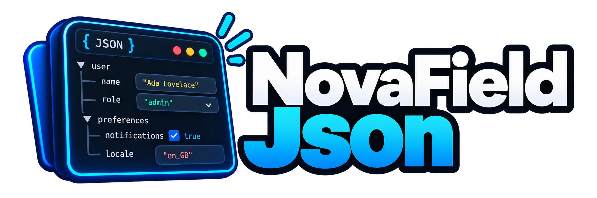

Laravel Nova field · 2.0.0
Structured data,
one JSON column.
Json::make() merges ordinary Nova fields into a single JSON column. JsonEditor::make() hands the whole column to the user as a tree, key/value, raw or repeatable editor. Both share the same storage rules.
01 · The smallest real thing
Four lines, one column.
Give the model a cast, then compose ordinary Nova fields into it. The user sees two normal fields; the database sees one JSON column.
use Gabrielesbaiz\NovaFieldJson\Json;
Json::make('meta', [
Select::make(__('Discount Type'), 'type')->options([
'percent' => __('Percent'),
'amount' => __('Amount'),
])->rules('required'),
Number::make(__('Discount Value'), 'value')->rules('min:0'),
]),{ "type": "percent", "value": 12 }meta->type
meta->value02 · Two fields, one contract
Compose the shape, or hand over the column.
Which one you want depends on a single question: do the keys belong to your schema, or to your user?
Json::make()
Rewrites each child's attribute to column->key, routes its value into a shared accumulator, then dissolves into the parent field list. Nova renders the children, so nothing is added to Nova's bundle.
- Nesting to any depth
- Several groups merge into one column
- ~40 methods forwarded to the children
->replaces()->defaults()->encrypted()
JsonEditor::make()
Owns the column and renders its own editor — for data whose keys the user creates. Nova's own KeyValue stores every value as a string and renders nothing at all when a value is an object.
- Tree, key/value, raw and repeatable modes
- Typed rows; nested values actually render
- Full keyboard tree, live region, roving tabindex
- Index badge and collapsible detail viewer
03 · What 2.0 fixes
Four of the twelve were losing data quietly.
Nesting one group inside another is the normal case, and it is also where 1.x came apart. Every row below is pinned by a named regression test.
Json::make('meta', [
Select::make(__('Type'), 'type'),
Json::make('discount', [
Select::make(__('Kind'), 'kind'),
Number::make(__('Value'), 'value'),
Json::make('limits', [
Number::make(__('Max'), 'max'),
]),
]),
]),{
"type": "seasonal",
"discount": {
"kind": "percent",
"value": 12,
"limits": { "max": 100 }
}
}| Defect | Severity | What actually happened |
|---|---|---|
| Uncast columns corrupted | data loss | The column was re-read between children, so child 2 saw child 1's encoded string. Any group of 2+ fields on a column without an array cast stored [0 => '{"a":1}', 'b' => 2]. |
| Actions filled model 1 only | data loss | The “already cleared” flag lived on the field instance and was never reset. From the second model in an action's collection onward, the column was never cleared. |
| Two groups erased each other | data loss | The first child nulled the whole column, so whichever group filled second wiped the first unless you remembered ->saveHistory(). Merging is now the default. |
| Children's fill pipeline bypassed | data loss | Values were read straight off the request, skipping every field that overrides fillAttributeFromRequest(). Boolean stored "1", and File never uploaded at all. |
04 · Repeatable rows
Rows in a JSON column, with per-row rules.
Nova's own Repeater owns the whole column and has no minimum or maximum. This renders rows of real Nova sub-fields inside a column you can still share.
JsonEditor::make(__('Tiers'), 'tiers')
->repeatable(fn () => [
Text::make(__('Label'), 'label')->rules('required'),
Number::make(__('Price'), 'price')->rules('numeric', 'min:0'),
])
->min(1)
->max(10)
->sortable(),[
{ "label": "Small", "price": 10 },
{ "label": "Large", "price": 20 }
]tiers.1.fields.price05 · The honest comparison
If your shape is fixed and small, skip this package.
Nova already addresses into a JSON column and Eloquent already casts one. Two fields, no dependency — and it works today.
// app/Models/Product.php
protected $casts = ['meta' => 'array'];
// app/Nova/Product.php
Text::make('Discount Type', 'meta->type'),
Number::make('Discount Value', 'meta->value'),Four things it cannot do
- Hide, move or make a whole group readonly in one call
- Let the user create keys — Nova's
KeyValuerenders nothing for an object value - Put rows in a column you also share with other keys
- Merge, default, prune or encrypt the structure without writing it yourself
The trade: Json is not a Nova Field, so a few Nova APIs will not accept one. JsonEditor is a real field, and costs an 83 KB gzipped bundle.
Support this package
Free forever. Not free to maintain.
Nobody notices a JSON column that keeps its shape. The work that goes unseen is the part that keeps it that way: reading Nova's fill pipeline again after every minor release, checking that a readonly field still cannot have its value pruned, and rebuilding dist/ when the asset externals move. Four of the twelve defects fixed in 2.0 threw nothing at all — finding that kind of thing is slow, unglamorous work. It stays MIT either way.
Sponsorship buys the hours to keep this green across new Nova majors: the compatibility passes, the regression tests for bugs nobody has hit yet, and the upgrade notes that say plainly which of your stored values are about to change. Not features — maintenance. It stays MIT either way.
Company tiers get your logo in the README and on this page.
⭐ Star the repo
Thirty seconds, and it is the first signal another Laravel developer looks at.
🐛 Open a good issue
A reproduction with the model's casts and the field definition is worth more than you think.
❤️ Sponsor from $5
Monthly, cancel anytime. It pays for the compatibility passes nobody sees.
🏢 Company tier
If this field is holding data in your admin panel at work, this is the tier for you.
Introduction
What this package is for, and the cases where plain Nova is already enough.
Do you need this?
If the shape of your JSON is fixed and small, you probably do not. Nova already addresses into a JSON column and Eloquent already casts one:
// app/Models/Product.php
protected $casts = ['meta' => 'array'];
// app/Nova/Product.php
Text::make('Discount Type', 'meta->type'),
Number::make('Discount Value', 'meta->value'),That works today. Field::resolveAttribute() resolves meta->type with data_get(), and fillModelWithData() writes it back with forceFill(). Two fields, no package.
It stops working the moment you want any of these:
- A group you can move, hide or make readonly as a unit —
->hideFromIndex()once instead of on nine fields, and no chance of the ninth being forgotten. - Keys the user creates. Nova has
KeyValue, but it stores every value as a string and renders nothing at all for a value that is an object or an array (KeyValueItem.vueis guarded byv-if="isNotObject"). - Rows in a JSON column. Nova's
Repeaterowns the whole column, so it cannot share one with other keys, and it has no minimum or maximum. - A column with no cast. The moment you want to merge, default, prune or encrypt that structure, you are writing it yourself.
The two fields
Json
Not a Nova Field. It extends FieldMergeValue, rewrites each child's attribute, and dissolves into the parent field list. Ships no assets at all.
JsonEditor
A real field with a Vue 3 front end. Owns the column and renders a tree, key/value, raw or repeatable editor.
Json is a composer rather than a field, Nova renders the children for free — but a handful of Nova APIs that expect a Field will not accept a group. JsonEditor is a real field, and costs an 83 KB gzipped asset bundle in return.What changed in 2.0
2.0 is a clean break from the 1.x port of armincms/json. Twelve defects are fixed; four of them were losing or corrupting data without throwing anything.
| Area | 1.x | 2.0 |
|---|---|---|
| Two groups, one column | Second wipes the first | They merge |
| Uncast column, 2+ fields | Corrupted structure | Correct |
| Action over many models | Only model 1 cleared | Each independent |
Boolean in a group | Stored "1" | Stores true |
->readonly() on a group | Threw | Forwarded |
The full list is on the upgrading page, which also says which of your stored values are about to change.
Installation
One Composer command. No config file, and nothing to publish to get started.
Requirements
| Requirement | Version |
|---|---|
| PHP | ^8.2 |
| Laravel | ^11.0 or ^12.0 |
| Laravel Nova | ^5.0 |
| ext-json | required |
Nova is a paid package. You need your own licence, and the nova.laravel.com Composer repository configured.
Install
composer require gabrielesbaiz/nova-field-jsonThe service provider is auto-discovered. It registers the JsonEditor assets through Nova::mix() and does nothing else — there is no config file and nothing to publish to get started.
Json? Then nothing is loaded into Nova's bundle at all. The composer ships no JavaScript and no CSS — it is Nova's own components doing the rendering.Translations
php artisan vendor:publish --tag=nova-field-json-langPublishes resources/lang/en.json to lang/vendor/nova-field-json. Every string the editor renders is in there as an identity mapping, so it doubles as the translator's template.
Your first field
Cast the column on the model, then compose into it:
protected $casts = [
'meta' => 'array',
];Json::make('meta', [
Text::make(__('Label'), 'label'),
]),A cast is not required — without one the package encodes to a JSON string itself — but it is the simpler path, and it lets the database query the column.
Json groups
Composing ordinary Nova fields into one JSON column.
Composing
Json::make($column, $fields) takes the column name and either an array of fields or a closure returning one.
Json::make('meta', [
Text::make(__('Label'), 'label'),
]),
// A closure is evaluated when the group is built, which is useful when
// the field list depends on the request or on a gate.
Json::make('meta', fn () => [
Text::make(__('Label'), 'label'),
...(auth()->user()->isAdmin() ? [Text::make(__('Internal'), 'internal')] : []),
]),Each child's attribute is rewritten to column->key, which is the form Nova resolves through data_get().
->. Nova's Field::resolveAttribute() hard-codes str_replace('->', '.', $attribute), so any other separator would render every field blank. It is an internal wire format you never type.Nesting
A Json group inside a Json group nests the structure. There is no depth limit.
Json::make('meta', [
Select::make(__('Type'), 'type'),
Json::make('discount', [
Select::make(__('Kind'), 'kind'),
Json::make('limits', [
Number::make(__('Max'), 'max'),
]),
]),
]),meta->discount->limits->max{
"type": "seasonal",
"discount": {
"kind": "percent",
"limits": { "max": 100 }
}
}Sharing a column
Several groups can write to one column. They merge; nothing you did not declare is touched.
Json::make('meta', [
Text::make(__('Label'), 'label'),
]),
// ... other fields, a Panel, a Tab ...
Json::make('meta', [
Boolean::make(__('Featured'), 'featured'),
]),
// {"label": "Winter sale", "featured": true}Keys written outside Nova survive too — a group only ever touches the paths its own fields declare.
$product->meta = ['set_by_a_job' => 1];
// after a Nova save that only touches `label`
// ['set_by_a_job' => 1, 'label' => 'Winter sale']null before writing, so whichever group filled second wiped the first unless you remembered ->saveHistory(). That method is gone, and merging is the default.The consequence: a key whose field you later delete from the group stays in the column. Use
->replaces() if you want it gone.Replacing a column
Json::make('meta', [
Text::make(__('Label'), 'label'),
])->replaces(),Everything else in the column is discarded on save. A replacing group must be the only group on its column; sharing one throws JsonFieldException rather than racing silently.
Forwarding methods
Calling a field method on the group applies it to every child, nested ones included.
Json::make('meta', [
Text::make(__('Label'), 'label'),
Json::make('inner', [Text::make(__('Note'), 'note')]),
])
->hideFromIndex()
->readonly()
->help(__('Managed by the import job.')),Around forty methods are forwarded, covering FieldElement, Field, MutableFields, HandlesValidation, help text, Metable and the authorisation traits. Methods that live in opt-in Nova traits — dependsOn(), copyable(), filterable(), peekable() — are applied only to the children that support them.
JsonFieldException: Json::make('meta', [...])->hideFromIndexx()
is not a forwardable field method. Did you mean ->hideFromIndex()?
Use ->each(fn (Field $field) => $field->hideFromIndexx(...)) to
reach every child directly.The full list is the ForwardsFieldCalls::FORWARDED constant. Json is also Macroable, and a macro wins over the allowlist:
Json::macro('compactAll', function () {
return $this->each(fn (Field $field) => $field->compact());
});Dependent fields
A child is an ordinary Nova field, so ->dependsOn() drives it exactly as it drives a column-backed one. The only rule is that the group rewrites a child's attribute to column->key, and dependsOn() keys on attributes — so watch the rewritten attribute.
Json::make('meta', [
Select::make(__('Type'), 'type')->options([
'percent' => __('Percent'),
'amount' => __('Amount'),
]),
Number::make(__('Value'), 'value')
->dependsOn('meta->type', function (Number $field, NovaRequest $request, FormData $formData) {
$field->rules($formData->get('meta->type') === 'percent' ? 'max:100' : 'max:100000');
}),
]),A child can equally depend on a plain field outside the group (->dependsOn('status', …)), and a group one level deeper is watched as meta->inner->key. Calling ->dependsOn() on the group forwards it to every child that supports it.
Dependent::__construct() reads $field->attribute the moment you call dependsOn() — before the group rewrites it — so passing the object records type instead of meta->type, and the front end watches a field that does not exist.Reaching a child directly
Json::make('meta', [...])
->each(fn (Field $field) => $field->withMeta(['extraAttributes' => ['step' => 5]])),
// ->apply() is the same method, for call sites where it reads better
Json::make('meta', [...])->apply(fn ($field) => $field->somethingExotic()),$json->someProperty = $x was forwarded to every child, which quietly swallowed typos. Use ->each(fn (Field $field) => $field->textAlign = 'right') instead.Using a group in an action
Nova's action field list wants Field instances, so flatten the group:
public function fields(NovaRequest $request): array
{
return Json::make('meta', [
Select::make(__('Type'), 'type')->default('percent'),
Number::make(__('Value'), 'value'),
])->resolveForAction($request)->fields();
}
public function handle(ActionFields $fields, Collection $models)
{
// $fields->meta === ['type' => 'percent', 'value' => 12]
}resolveForAction() is what makes ->default() work here; 1.x had no equivalent and silently dropped defaults on action fields. Running the action over many models is safe: each model accumulates its own state.
What cannot go in a group
Relationship fields (BelongsTo, MorphTo, HasMany) hydrate the model or a pivot directly rather than producing a storable value, and Unfillable fields (Heading, Badge, Line, Gravatar, Status, Sparkline, UiAvatar) produce no value at all. Both throw at boot.
JsonFieldException: [Laravel\Nova\Fields\Heading] cannot be used
inside Json::make('meta', [...]). Relationship and unfillable fields
hydrate the model directly instead of producing a storable value.1.x accepted them and silently stored nothing.
JsonEditor
A real Nova field for columns whose keys belong to the user rather than the schema.
Modes
use Gabrielesbaiz\NovaFieldJson\JsonEditor;
JsonEditor::make(__('Metadata'), 'meta'), // tree, the default
JsonEditor::make(__('Metadata'), 'meta')->keyValue(),
JsonEditor::make(__('Metadata'), 'meta')->raw(),The field is hidden from the index by default — it is a wide, interactive control. Call ->showOnIndex() to opt back in, which renders a compact badge.
Tree mode
A collapsible tree over arbitrarily nested data, with per-node type badges, inline key renaming and drag-to-reorder.
JsonEditor::make(__('Metadata'), 'meta')
->tree()
->expandDepth(2)
->height(400)
->allowTypeChange(false)
->lockedKeys(['theme', 'limits.max']),Locked keys are dotted paths: the value stays editable, the key cannot be renamed or removed.
role="tree" with tens of thousands of rows locks the browser.Key/value mode
Flat rows, but typed — which is the difference from Nova's own KeyValue. Each row carries a type picker (string, number, boolean, null, array, object), so 42 stays a number and true stays a boolean.
It also tells the user when a row will not be saved. Nova's KeyValue drops a blank-key row silently and lets a duplicate key quietly overwrite its twin; this flags both inline.
Raw mode
A CodeMirror editor over the JSON source, with line numbers, bracket matching, a Format button (Cmd/Ctrl+Shift+F) and a located parse error.
The Metadata field must contain valid JSON.If the value will not parse, the literal text is submitted rather than discarded, so the server reports a real validation error instead of the user's work vanishing. The editor also follows Nova's dark-mode toggle live — Nova's own Code field reads its theme once at mount and stays light until reload.
Repeatable rows
JsonEditor::make(__('Tiers'), 'tiers')
->repeatable(fn () => [
Text::make(__('Label'), 'label')->rules('required'),
Number::make(__('Price'), 'price')->rules('numeric'),
Boolean::make(__('Default'), 'is_default'),
])
->min(1)->max(10)->sortable(),[
{ "label": "Small", "price": 10,
"is_default": true },
{ "label": "Large", "price": 20,
"is_default": false }
]Rows render with the real Nova components for each sub-field, so a Select, a Date or a File behaves exactly as it would anywhere else — including file uploads, which are deferred until after the save.
->sortable() means rows are reorderable, not “sortable column on the index”. Nova's own Repeater makes the same redefinition. Use ->sortableColumn() for index sorting on the raw column.Index and detail
On the index, a compact badge — {3} for an object, [5] for an array — with the pretty-printed value in a hover popover. Nova's KeyValue has no index representation at all.
On the detail screen, a read-only collapsible viewer with expand-all, collapse-all and copy-to-clipboard. This is a purpose-built viewer, not the form components in disabled mode, so nested values are actually visible.
JsonEditor::make(__('Metadata'), 'meta')
->expandDepth(3) // how deep the detail viewer starts open
->collapsible(), // Nova's standard collapsible panelKeyboard and accessibility
The tree is a real role="tree" with a roving tab index — one tab stop for the whole control, not one per node.
| Key | Action |
|---|---|
↓ / ↑ | Next / previous visible node |
→ | Expand, or descend |
← | Collapse, or move to the parent |
Home / End | First / last node |
Enter | Edit the focused node |
Shift+Enter | Add a sibling |
Cmd/Ctrl+Enter | Add a child |
Delete / Backspace | Remove the focused node |
Alt+↑ / Alt+↓ | Reorder within the parent |
Escape | Revert the edit in progress |
In key/value mode, Enter on the last value adds a row and focuses its key. Nodes carry aria-level, aria-posinset, aria-setsize, aria-expanded and aria-selected; every icon-only button has an aria-label; and reorders and removals are announced through a polite live region, because drag is otherwise invisible to a screen reader.
Storage & validation
These options apply identically to Json and JsonEditor.
Casting
By default the package looks at the model's casts and does the right thing:
| Column | What is assigned |
|---|---|
'array', 'json', 'object', 'collection' | the PHP array — Eloquent encodes it |
encrypted:array and friends | the PHP array |
AsArrayObject, AsCollection, AsEnumCollection, any Castable/CastsAttributes | the PHP array |
| no cast | a JSON string |
Nova's Fluent (action fields) | the PHP array, always |
use Gabrielesbaiz\NovaFieldJson\Enums\StorageFormat;
Json::make('meta', [...])->storeAs(StorageFormat::Encoded), // always a JSON string
Json::make('meta', [...])->storeAs(StorageFormat::Native), // always a PHP arrayStorageFormat::Encoded is the replacement for 1.x's ->ignoreCasting().
Encryption
Json::make('vault', [
Text::make(__('Token'), 'token'),
])->encrypted(),The structure is JSON-encoded and then run through Crypt::encryptString().
encrypted:* Eloquent cast — the value would be encrypted twice and the original lost. The package throws JsonFieldException rather than letting that happen.The value stored in [vault] could not be decrypted. This usually
means APP_KEY was rotated after the value was written, or
->encrypted() was added to a column that already holds plain JSON.Encoding flags
Uncast columns are encoded with JSON_UNESCAPED_UNICODE | JSON_UNESCAPED_SLASHES | JSON_THROW_ON_ERROR, so caffè stays caffè rather than becoming caffè.
Json::make('meta', [...])->jsonFlags(JSON_PRETTY_PRINT | JSON_UNESCAPED_UNICODE),JSON_THROW_ON_ERROR is always added — a silent null on a column you are about to write is never what you want.
Defaults and pruning
Json::make('meta', [
Text::make(__('Label'), 'label'),
])->defaults([
'discount.type' => 'percent',
'discount.value' => 0,
]),Keyed by dotted path. Anything already in the column wins, so this fills in structure for rows written before a key existed without overwriting rows that already have it.
Json::make('meta', [
Text::make(__('Label'), 'label')->nullable(),
])->pruneNulls(),Null leaves are removed, and so is any parent left empty by that removal. It runs once on the final structure, not per field.
Validation
Rules go on the child fields, exactly as they would anywhere else. Nova maps the validation key to the field name automatically, so the message reads “The Discount Type field is required.”, not “The meta->type field is required.”.
Json::make('meta', [
Select::make(__('Discount Type'), 'type')
->rules('required'),
Number::make(__('Discount Value'), 'value')
->rules('numeric', 'min:0'),
]),The Discount Type field is required.
// not:
// The meta->type field is required.For repeatable rows, rules on the sub-fields become per-row rules and the attribute names are humanised:
JsonEditor::make(__('Tiers'), 'tiers')
->repeatable(fn () => [
Text::make(__('Label'), 'label')->rules('required'),
])
->min(1)
->max(5),tiers array, min:1, max:5
tiers.0.fields.label required
// reported as “Tiers #1 Label”fields segment is not cosmetic. Nova's front-end HandlesValidationErrors derives a nested field's error key as {parent}.{index}.fields.{attribute}. Declare a rule against tiers.*.price instead of tiers.*.fields.price and the message renders nowhere, with nothing thrown.Recipes
Whole, paste-able solutions to tasks that come up in real panels.
A settings panel split across tabs
Tab::group(__('Settings'), [
Tab::make(__('Appearance'), [
Json::make('settings', [
Select::make(__('Theme'), 'theme')->options([...]),
Boolean::make(__('Compact'), 'compact'),
]),
]),
Tab::make(__('Limits'), [
Json::make('settings', [
Number::make(__('Max uploads'), 'max_uploads'),
Number::make(__('Retention days'), 'retention_days'),
]),
]),
]),Both tabs write to settings and merge, so you get one column with four keys. In 1.x this needed ->saveHistory() on the second group and silently destroyed data if you forgot.
Different fields for different users
Json::make('meta', function () use ($request) {
$fields = [Text::make(__('Label'), 'label')];
if ($request->user()->isAdmin()) {
$fields[] = Text::make(__('Internal note'), 'internal_note');
}
return $fields;
}),A non-admin's save leaves internal_note untouched, because nothing wrote to that path and the group never deletes a path it did not write. The same is true of ->canSee() and ->readonly().
Encrypted credentials beside plain config
// app/Models/Integration.php — only `config` is cast
protected $casts = ['config' => 'array'];
Json::make('config', [
Text::make(__('Endpoint'), 'endpoint'),
]),
Json::make('credentials', [
Text::make(__('Client ID'), 'client_id'),
Password::make(__('Client secret'), 'client_secret'),
])->encrypted(),Keep endpoint in the plain column so you can still query it. Do not add ->encrypted() to a column already cast encrypted:array.
A free-form column with a locked schema key
JsonEditor::make(__('Metadata'), 'meta')
->tree()
->defaults(['schema_version' => 2])
->lockedKeys(['schema_version'])
->expandDepth(2)
->help(__('schema_version is managed by the importer.')),defaults() puts the key there for rows that predate it; lockedKeys() stops the user renaming or deleting it while leaving the value editable.
Keeping a column readable in the database
Json::make('meta', [
Text::make(__('Label'), 'label'),
])
->storeAs(StorageFormat::Encoded)
->jsonFlags(JSON_PRETTY_PRINT | JSON_UNESCAPED_UNICODE | JSON_UNESCAPED_SLASHES)
->pruneNulls(),Pretty-printed, no escaped unicode, no null noise. Useful for columns a human reads in a database client; it costs bytes, so do not do it at volume.
Pricing tiers with per-row validation
protected $casts = [
'tiers' => 'array',
];The Pricing tiers #2 Unit price
must be a number.JsonEditor::make(__('Pricing tiers'), 'tiers')
->repeatable(fn () => [
Text::make(__('Label'), 'label')->rules('required', 'max:40'),
Number::make(__('Minimum quantity'), 'min_qty')->rules('required', 'integer', 'min:1'),
Currency::make(__('Unit price'), 'price')->rules('required', 'numeric', 'min:0'),
])
->min(1)
->max(8)
->sortable()
->help(__('Tiers apply from their minimum quantity upwards.')),The message renders on that row's input, because rules declared on a sub-field generate the tiers.1.fields.price key Nova's front end looks for.
Bulk-updating a JSON column from an action
class ApplyDiscount extends Action
{
use InteractsWithQueue, Queueable;
public function fields(NovaRequest $request): array
{
return Json::make('meta', [
Select::make(__('Type'), 'type')
->options(['percent' => __('Percent'), 'amount' => __('Amount')])
->default('percent')
->rules('required'),
Number::make(__('Value'), 'value')->rules('required', 'min:0'),
])->resolveForAction($request)->fields();
}
public function handle(ActionFields $fields, Collection $models)
{
foreach ($models as $model) {
$model->meta = array_replace($model->meta ?? [], $fields->meta);
$model->save();
}
return Action::message(__('Discounts applied.'));
}
}$fields->meta is the nested array. In 1.x it also carried a stray hasCast key, and ->default('percent') was silently dropped.
API reference
Every public method on the two fields, the shared storage trait, and the enums.
Json
| Signature | What it does | Default |
|---|---|---|
Json::make(string $column, callable|iterable $fields = []) | Create a group writing to $column | — |
fields(): array | Every leaf field, nested groups flattened | — |
toArray(): array | Alias of fields() | — |
replaces(bool $replaces = true): static | Discard everything else in the column | false |
replacesColumn(): bool | Whether this group replaces the column | — |
ownedPaths(): array | The dotted paths this group's fields map to | — |
resolve(mixed $resource, ?string $attribute = null): void | No-op; the group has no value of its own | — |
resolveForAction(NovaRequest $request): static | Resolve every leaf for use in an action | — |
each(callable $callback): static | Apply a callback to every leaf | — |
apply(callable $callback): static | Alias of each() | — |
Json::macro(string $name, callable $macro) | Add a method to every group | — |
JsonEditor
| Signature | What it does | Default |
|---|---|---|
JsonEditor::make(string $name, ?string $attribute = null) | Create the editor field | — |
tree(): static | Collapsible nested tree | the default mode |
keyValue(): static | Flat typed key/value rows | — |
raw(): static | CodeMirror over the JSON source | — |
repeatable(Closure|iterable $fields): static | Repeated rows of a sub-field schema | — |
mode(EditorMode $mode): static | Set the mode from the enum | EditorMode::Tree |
min(int $min): static | Minimum rows (repeatable) | none |
max(int $max): static | Maximum rows (repeatable) | none |
sortable($value = true): static | Rows are drag-reorderable | false |
sortableColumn(bool $value = true): static | The column is sortable on the index | false |
height(int $height): static | Editor height in pixels | 320 |
expandDepth(int $depth): static | How deep the tree and viewer start open | 1 |
allowTypeChange(bool $allow = true): static | Let the user change a value's JSON type | true |
lockedKeys(array $keys): static | Dotted paths that cannot be renamed or removed | [] |
isRepeatable(): bool | Whether the field is in repeatable mode | — |
collapsible() / collapsedByDefault() | Nova's standard collapsible panel behaviour | off |
Storage, on both
| Signature | What it does | Default |
|---|---|---|
storeAs(StorageFormat $format): static | Force the representation | inferred from the casts |
encrypted(bool $encrypted = true): static | Encrypt the encoded JSON at rest | false |
jsonFlags(int $flags): static | Flags for json_encode() | UNESCAPED_UNICODE | UNESCAPED_SLASHES | THROW_ON_ERROR |
pruneNulls(bool $prune = true): static | Drop null leaves and the parents they empty | false |
defaults(array $defaults): static | Values merged under the stored data, by dotted path | [] |
defaultStructure(): array | Those defaults, expanded into a nested array | — |
serializer(): JsonSerializer | The serializer reflecting the current options | — |
Enums
| Enum | Cases |
|---|---|
StorageFormat | Native, Encoded, Encrypted |
EditorMode | Tree, KeyValue, Raw, Repeatable |
RowValueType | String, Number, Boolean, Null, Arr, Obj |
All three are backed string enums under Gabrielesbaiz\NovaFieldJson\Enums.
Troubleshooting
Symptoms readers actually hit, and what to check next.
My fields render but the column is always empty
Check the attribute Nova is actually posting. A child inside Json::make('meta', …) must have a plain key as its attribute:
// right
Json::make('meta', [Text::make(__('Label'), 'label')]), // posts meta->label
// wrong — the column name is already supplied by the group
Json::make('meta', [Text::make(__('Label'), 'meta->label')]),Then confirm the column is fillable. The package writes through forceFill(), but a $guarded that names the column still applies on a later fill().
JsonFieldException: not a forwardable field method
The method is not on the allowlist. Either it does not exist on Nova's Field at all — ->showWhen*() is the common one; it has never existed — or it is genuinely field-specific. Use the escape hatch:
Json::make('meta', [...])->each(fn ($field) => $field->theMethod(...)),The exception message suggests the nearest allowlist entry, which catches typos.
My second group's data keeps disappearing
If you are on 1.x, this is the saveHistory() bug. Upgrade to 2.0, where merging is the default.
On 2.0, the only thing that removes a key you did not write is ->replaces() — and it throws if two groups share the column. A silent disappearance is more likely a $fillable/$guarded issue or a model observer rewriting the attribute after the fill.
Boolean values changed from "1" to true after upgrading
That is the fix, not a regression. 1.x read each child's value straight off the request, which skipped Boolean::fillAttributeFromRequest(). The same applies to Code::make()->json() (now an array), Currency, and File (which previously never uploaded at all).
Audit anything reading those keys, and consider a one-off normalising migration. The upgrading page lists the full set.
The column contains [0 => '{"a":1}', 'b' => 2]
Data written by 1.x to a column with no array/json cast. The old fill re-read the column between children, so the second child saw the first child's encoded string and data_set() appended alongside it.
2.0 writes correctly but does not repair existing rows. Write a data-fix migration: for each affected row, json_decode() element 0, merge the remaining string keys over it, and write it back.
The editor renders as an unstyled block
dist/ is missing or stale. It is committed to the repository because it is the only thing a consuming application loads:
npm ci && npm run prodIf you installed from Packagist and still see this, clear Nova's asset cache (php artisan view:clear) and hard-reload — the asset URL is hashed from dist/mix-manifest.json.
Per-row validation errors do not appear on the inputs
The error key has to be {field}.{index}.fields.{attribute}. If you are declaring row rules by hand rather than putting them on the sub-fields, use that shape:
// right
'tiers.*.fields.price' => 'numeric',
// wrong — the message will resolve to nothing in the UI
'tiers.*.price' => 'numeric',Putting ->rules() on the sub-field instead generates the right key for you.
A key I removed from the group is still in the column
That is deliberate. A group never deletes a path it did not write, because “wrote nothing” is indistinguishable from readonly, unauthorised, hidden, or simply not submitted — and deleting in those cases loses data.
If the group really does own the whole column:
Json::make('meta', [...])->replaces(),Otherwise clear the key yourself in a migration, once.
The value stored in [meta] is not valid JSON
The column holds something the package cannot decode — usually a partially-written value from 1.x, a serialized PHP array, or a column that was encrypted before ->encrypted() was removed.
Inspect the raw value with DB::table(...)->value('meta'). If it is PHP-serialized, migrate it to JSON; if it is encrypted, put ->encrypted() back.
Security
This package writes user input into a JSON column and reads it back out. Here is what that does and does not guarantee.
Properties
- Values are never interpolated into SQL. Writes go through Eloquent's
forceFill()and the model's casts; reads go throughdata_get(). - Each child field runs its own fill pipeline, so a field's own sanitising and casting applies inside a group exactly as it does outside one. 1.x bypassed this, which is why
Booleanstored raw request strings. - Malformed JSON is a validation error, not a 500. The raw editor's payload is parsed server-side with
JSON_THROW_ON_ERRORand rejected with a message keyed to the field. ->encrypted()usesCrypt::encryptString(), and refuses to layer on top of an encrypting Eloquent cast, because double-encrypting loses the original irrecoverably.- Decryption failures are reported, not swallowed. A rotated
APP_KEYproduces a named exception rather than a silent empty array. - The editor renders values as text, never as HTML. Vue interpolation and
<pre>are used throughout; there is nov-htmlanywhere in the package.
What this package does not do
It does not authorise anything. A Json group forwards ->canSee() to its children, but a key the user should not see is only hidden if you hide it.
canSee() or made readonly() is filtered out by Nova before the fill runs, so it writes nothing — and because a group never deletes a path it did not write, the stored value survives. That is deliberate: the alternative loses data.Reporting a vulnerability
Please review our security policy on how to report vulnerabilities. Do not open a public issue.
Upgrading to 2.0
A clean break. Several changes alter what gets written to your JSON columns — read the behaviour section before you deploy.
Requirements
| 1.x | 2.0 | |
|---|---|---|
| PHP | 8.0+ | 8.2+ |
| Laravel | 10, 11, 12 | 11, 12 |
| Nova | 4 | 5 |
Laravel 10 is EOL and has been dropped, and Nova 4 with it.
Renames
| 1.x | 2.0 |
|---|---|
NovaFieldJson | Json |
NovaFieldJsonServiceProvider | FieldServiceProvider |
->ignoreCasting() | ->storeAs(StorageFormat::Encoded) |
->saveHistory() | removed — this is now the default |
rg -l 'NovaFieldJson' app/ | xargs sed -i '' \
-e 's/NovaFieldJson::make/Json::make/g' \
-e 's/use Gabrielesbaiz\\NovaFieldJson\\NovaFieldJson;/use Gabrielesbaiz\\NovaFieldJson\\Json;/g'Then grep for saveHistory and ignoreCasting by hand. The provider is auto-discovered — remove any manual entry from config/app.php or bootstrap/providers.php.
Behaviour changes that can alter stored data
| # | Change | What to do |
|---|---|---|
| 1 | Merging is the default. 1.x nulled the whole column before writing unless you called ->saveHistory(). | If you relied on the wipe, call ->replaces() explicitly. |
| 2 | Nothing is deleted that was not written. A key whose field you later delete stays in the column. | Use ->replaces(), or clear the key once in a migration. |
| 3 | Values may change type. Boolean → true, Code::json() → array, Currency formats, File actually uploads. | Audit code reading those keys; consider a normalising migration. |
| 4 | Uncast columns were corrupted in 1.x. 2.0 writes correctly but does not repair existing rows. | Write a data-fix migration if you see numeric-keyed JSON strings. |
| 5 | Unsupported children now throw at boot instead of silently storing nothing. | Remove BelongsTo, Heading and friends from groups. |
| 6 | __set no longer sprays. | Use ->each(fn ($f) => $f->prop = $x). |
| 7 | Encoding flags changed. è → è, \/ → /. | Byte-comparison tests, checksums and WHERE meta = '…' queries will break. |
| 8 | Action fields no longer carry a junk hasCast key. | Remove any defensive reads of it. |
| 9 | The separator is fixed at ->. | Nothing — it was never configurable in a way that worked. |
New in 2.0
JsonEditor— four editor modes plus repeatable rows->defaults(),->pruneNulls(),->encrypted(),->jsonFlags(),->storeAs(),->replaces()->each()/->apply(), andJson::macro()Json::resolveForAction(), so->default()works on action fields- Full method forwarding for
readonly,rules,help,dependsOn,canSeeand ~40 others
Changelog
Mirrors CHANGELOG.md. The current release in full; older entries summarised.
2.0.0 — 2026-09-27
A clean-break rewrite. See Upgrading before deploying — several changes alter what gets written to your JSON columns.
Added
JsonEditor— a real Nova field with four editors (tree, key/value, raw, repeatable rows), a read-only index badge and a collapsible detail viewer.- Repeatable rows:
JsonEditor::make('tiers')->repeatable([...])->min(1)->max(10)->sortable(). ->defaults(),->pruneNulls(),->encrypted(),->jsonFlags(),->storeAs(),->replaces()on both fields.->each()/->apply()escape hatch, andJsonis nowMacroable.- Full method forwarding:
readonly,rules,help,dependsOn,canSeeand ~40 others now reach the child fields instead of throwing. Json::resolveForAction(), so->default()works on action fields.- A Pest suite (93 tests), PHPStan level 6, Pint, and four CI workflows.
Fixed
- Uncast columns were corrupted. A group of 2+ fields on a column with no
array/jsoncast re-read its own encoded output between children. - Actions only worked for the first model. The “clear the old value” flag lived on the field instance and was never reset.
- Action fields were polluted. The cast probe called
hasCast()on Nova'sFluent, which records an attribute namedhasCastand returns truthy rather than failing. - Child fields never ran their own fill logic.
Booleanstored"1",Code::json()stored a string,Filenever uploaded. - Two groups on one column no longer erase each other, and a group never deletes a path it did not write.
use Iluminate\Http\Request(typo), and the unused dynamic$field->wrapper.- Strict comparison when detecting null values.
Changed
- Requires PHP 8.2+, Laravel 11+, Nova 5+.
NovaFieldJson→Json;NovaFieldJsonServiceProvider→FieldServiceProvider.->ignoreCasting()→->storeAs(StorageFormat::Encoded);->saveHistory()removed.- Encoding uses
JSON_UNESCAPED_UNICODE | JSON_UNESCAPED_SLASHES | JSON_THROW_ON_ERROR. - Writing a property on a group now throws instead of spraying it onto children.
- Relationship and unfillable fields inside a group now throw at boot.
1.0.0 — 2025-03-03
Initial release, ported from armincms/json.
Project & licence
The gates a pull request has to pass, the fork caveat, who to thank, and the licence in full.
Getting set up
Nova is a paid package, so you need your own licence to work on this:
composer config http-basic.nova.laravel.com "you@example.com" "your-licence-key"
composer install
npm installauth.json is gitignored — never commit it.
The gates
composer test # pest — 93 tests
composer analyse # phpstan level 6
composer format # pint
npm run test # vitest — 78 tests
npm run prod # rebuild dist/dist/ is committed, because it is the only thing a consuming Nova app loads. Run npm run prod and commit the result whenever you touch resources/ — CI fails the build otherwise.
The PHP suite covers each of the 1.x defects as a named regression. The JS suite covers the two contracts most likely to break silently on a Nova upgrade: the fill() payload shape and the nested validation key.
A note for outside contributors
CI cannot run on pull requests from forks: GitHub does not expose secrets to them, and without the Nova credentials composer install fails. A maintainer will run the suite locally on your branch. Please say in the PR which checks you ran yourself.
CI runs the PHP matrix — PHP 8.2–8.4 × Laravel 11–12 × lowest/stable — plus PHPStan, Pint, and an assets job that fails if dist/ is out of date.
Credits
Written and maintained by Gabriele Sbaiz, with thanks to everyone who has contributed.
The composer began as a port of armincms/json by Armin Group, and owes it the original idea of rewriting a field's attribute to reach into a JSON column. The 2.0 internals are a rewrite, but the shape of the API is theirs.
It also stands on work it does not contain: Laravel, Laravel Nova, and CodeMirror.
Conventions
- PHP follows Pint's
laravelpreset plus strict types; runcomposer format. - Prefer a test that fails before your fix and passes after it.
- If you change how a value is stored, add a note to
UPGRADING.md.
Four workflows gate the repository: run-tests.yml, phpstan.yml, fix-php-code-style-issues.yml and assets.yml.
Disclaimer
This package is provided as is. It writes to your database columns, and 2.0 deliberately changes what some of those writes contain — reading the upgrade notes and backing up affected columns before deploying is the deploying application's responsibility, not this package's.
Licence
MIT, in full, so you never have to leave this page to decide whether you may ship it.
The MIT License (MIT)
Copyright (c) Gabriele Sbaiz <gabriele@sbaiz.com>
Permission is hereby granted, free of charge, to any person obtaining a copy
of this software and associated documentation files (the "Software"), to deal
in the Software without restriction, including without limitation the rights
to use, copy, modify, merge, publish, distribute, sublicense, and/or sell
copies of the Software, and to permit persons to whom the Software is
furnished to do so, subject to the following conditions:
The above copyright notice and this permission notice shall be included in
all copies or substantial portions of the Software.
THE SOFTWARE IS PROVIDED "AS IS", WITHOUT WARRANTY OF ANY KIND, EXPRESS OR
IMPLIED, INCLUDING BUT NOT LIMITED TO THE WARRANTIES OF MERCHANTABILITY,
FITNESS FOR A PARTICULAR PURPOSE AND NONINFRINGEMENT. IN NO EVENT SHALL THE
AUTHORS OR COPYRIGHT HOLDERS BE LIABLE FOR ANY CLAIM, DAMAGES OR OTHER
LIABILITY, WHETHER IN AN ACTION OF CONTRACT, TORT OR OTHERWISE, ARISING FROM,
OUT OF OR IN CONNECTION WITH THE SOFTWARE OR THE USE OR OTHER DEALINGS IN
THE SOFTWARE.The MIT licence's warranty disclaimer and limitation of liability apply in full, alongside the disclaimer above.
Sponsor
Free forever. Not free to maintain.
What sponsorship pays for
Nobody notices a JSON column that keeps its shape. The work that goes unseen is the part that keeps it that way: reading Nova's fill pipeline again after every minor release, checking that a readonly field still cannot have its value pruned, and rebuilding dist/ when the asset externals move. Four of the twelve defects fixed in 2.0 threw nothing at all — finding that kind of thing is slow, unglamorous work. It stays MIT either way.
Sponsorship buys the hours to keep this green across new Nova majors: the compatibility passes, the regression tests for bugs nobody has hit yet, and the upgrade notes that say plainly which of your stored values are about to change. Not features — maintenance. It stays MIT either way.
Become a sponsor
Company tiers get your logo in the README and on this page.
If this field is holding data in your admin panel at work, the company tier is the one for you — it is the difference between a side project and a maintained dependency.
Four ways to help
⭐ Star the repo
Thirty seconds, and it is the first signal another Laravel developer looks at.
🐛 Open a good issue
A reproduction with the model's casts and the field definition is worth more than you think.
❤️ Sponsor from $5
Monthly, cancel anytime. It pays for the compatibility passes nobody sees.
🏢 Company tier
Your logo in the README and here, and a direct line for compatibility questions.